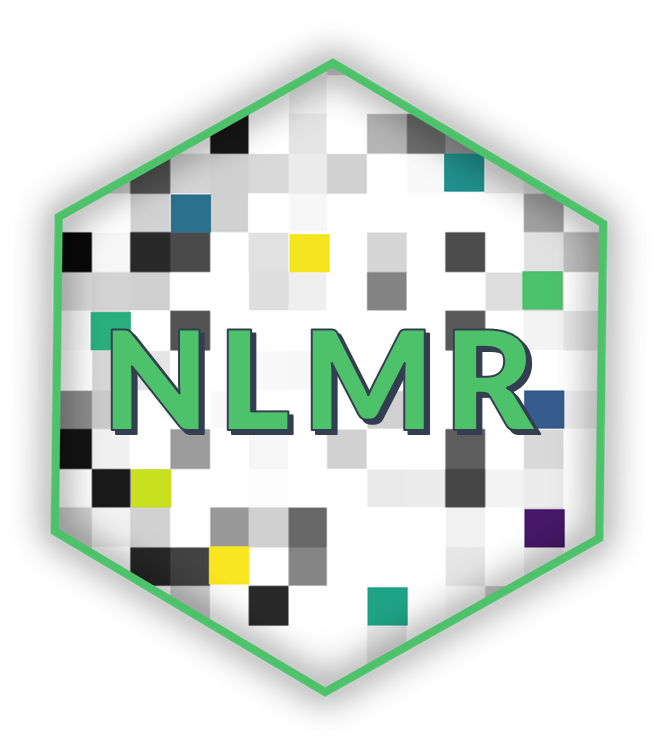

NLMR 
Neutral Landscape Models with R
NLMR is an R package for simulating neutral landscape models (NLM). Designed to be a generic framework like NLMpy, it leverages the ability to simulate the most common NLM that are described in the ecological literature. NLMR exploits the advantages of the raster-package and returns all simulation as RasterLayer-objects, thus ensuring a direct compability to common GIS tasks and a pretty flexible and simple usage.
Why NLMR? … and not one of the other software tools*
- It is so far the only library of NLM in
R- R is the programming lingua franca for ecologists
- Open-source + cross-platform
- Most comprehensive collection of algorithms to simulate NLM
- Embedded in a native GIS framework
- Variety of utility functions (classification, merging, visualization, …)
- Openly developed on github
- If something is missing or annoys you - get in touch
Getting Started
Install the release version from CRAN:
install.packages("NLMR")To install the developmental version of NLMR, use the following R code:
# install.packages("devtools")
devtools::install_github("marcosci/NLMR")Documentation
Documentation is available at NLMR/reference. To get started, please explore our vignettes online, or in R:
vignette(package = "NLMR")What’s New
We are currently on version 0.2.1. Major changes in this version are:
- Skip one test on CRAN to keep the Roboto font available
- Function
util_facetplotto plot a list of rasters as ggplot2 facet - Small updates to the webpage
See our news page for a detailed changelog.
Citation
To cite NLMR in publications use:
Marco Sciaini, Matthias Fritsch, Craig E. Simpkins (2018).
{NLMR}: Simulating neutral landscape models. R package version
0.2.0. URL https://CRAN.R-project.org/package=NLMR
A BibTeX entry for LaTeX users is
@Misc{,
title = {{NLMR}: Simulating neutral landscape models.},
author = {Marco Sciaini and Matthias Fritsch and Craig E. Simpkins},
note = {R package version 0.2},
url = {https://CRAN.R-project.org/package=NLMR},
}Additionally, we keep a record of publications that useNLMR. Hence, if you used NLMR please file an issue on GitHub so we can add it to the list.
Contributor Code of Conduct
Please note that this project is released with a Contributor Code of Conduct. By participating in this project you agree to abide by its terms.
Dependencies
NLMR imports many great packages that it depends on. Many thanks to the developers of these tools:
[1] "R (>= 3.1.0)" " checkmate" " dismo" " dplyr"
[5] " ggplot2" " igraph" " magrittr" " purrr"
[9] " RandomFields" " raster" " rasterVis" " sp"
[13] " spatstat" " stats" " tibble" " tidyr"
[17] " viridis" " extrafont"